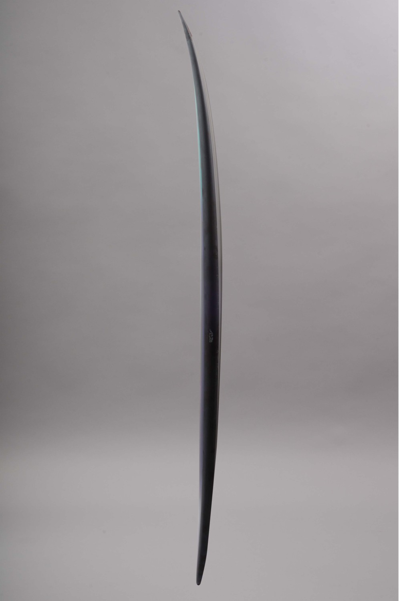
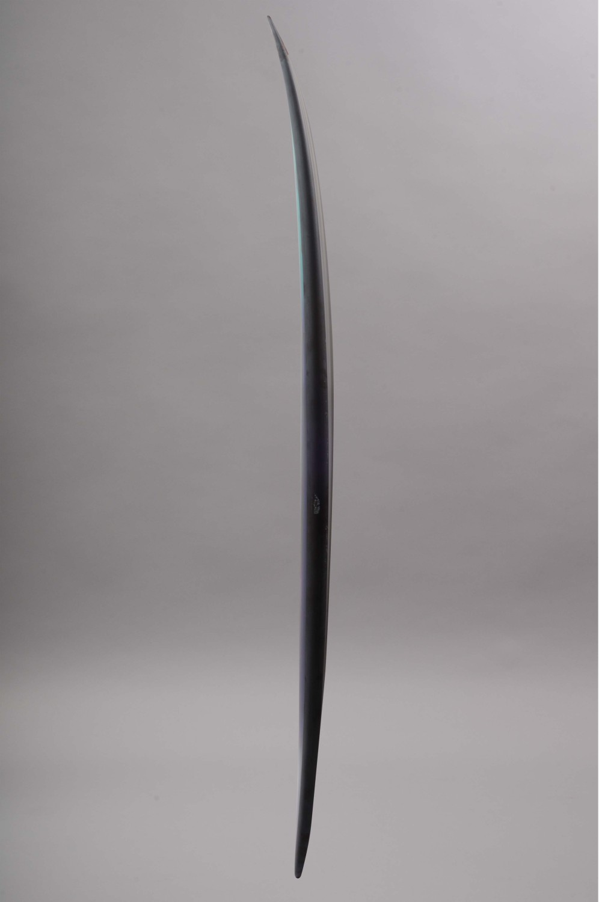

Surf Experience
Uwl Seventeen 6.1
 
880€

880€
La nouvelle UWL Seventeen est une planche faite pour les surfeurs intermédiaires et pros. Elle permet de rider les vagues de toute la côte Atlantique. De plus, avec son design moderne, vous ne passerez pas inaperçu.
Caractéristiques:
Longueur:6.1 pieds / 186 cm
Largeur: 18 pouces / 46 cm
Epaisseur: 4.5 cm
Vague: 0.60m à 1.80m
Niveau: Intermédiaire-Pro